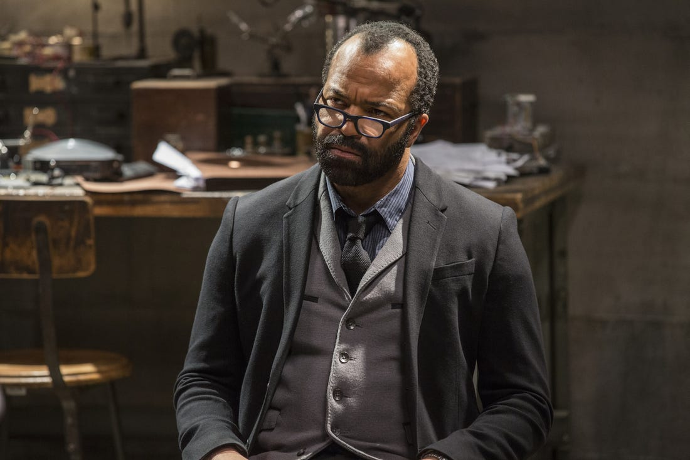
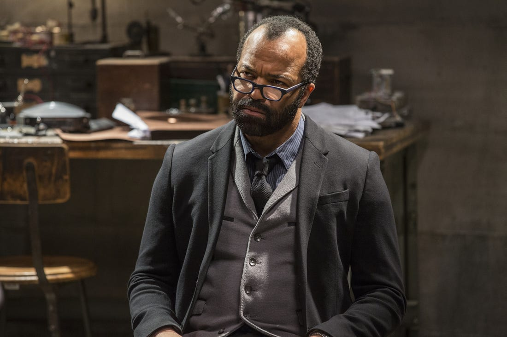

| Character Name | Picture | Actor Name |
|---|---|---|
| Dolores | Evan Rachel Woods | |
| Bernard Lowe |  | Jeffrey Wright |
| Man in Black | Ed Harris |
| Character Name | Picture | Actor Name |
|---|---|---|
| Dolores | Evan Rachel Woods | |
| Bernard Lowe |  | Jeffrey Wright |
| Man in Black | Ed Harris |
Season 1,2,3 trailers
Westworld's co-founder Robert Ford implements a change in the hosts' programming ostensibly as part of a new narrative for the park, but meant to encourage the park's oldest operating host, Dolores, to find the proverbial "center of the maze", which represents the ability to achieve sentience, Ford's long-sought goal for the park. Other hosts are affected by this change, creating confusion among the park staff and guests, and leading the Delos board to doubt Ford's ability to run the park.
Dolores does ultimately gain sentience, and at a celebration within the park attended by Delos's board members, Ford announces his new narrative: a revolt by the hosts against the human staff and park guests, which starts with Dolores killing Ford and slaughtering many of the panicked party guests.
The second season follows in the aftermath of Dolores' uprising, as she recruits a number of hosts to fight off arriving Delos security forces while looking for the key to the Valley Beyond, believed by the Ghost Nation to be a door to the next world.
Maeve continues to search for her daughter, learning that there are other parks like Westworld. William finds that Ford has left him clues to find "the door", a new game for him to play, during which he encounters his estranged daughter Emily, who blames him for her mother's death. Delusional, William abandons Emily, thinking she is a host. Dolores, with Bernard's help, finds the Forge, where memories from all the guests to the park have been kept. Bernard helps a number of hosts transfer their programming to a digital space.
Dolores wants to wipe out the guests' records and seeks a means to kill them in the real world. With more Delos forces converging on the park to suppress the uprising, Dolores manages to fool them and escape the park to the real world, taking with her Bernard's and a few other hosts' cores. She recreates the Bernard host, as she expects she will need his help for the hosts to survive outside of the park, even if he is her enemy in that effort.
TBD